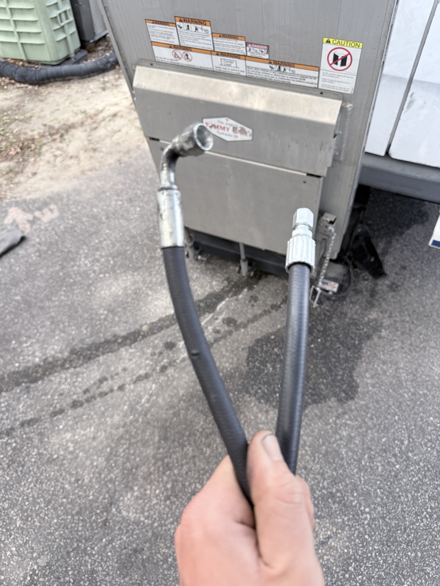
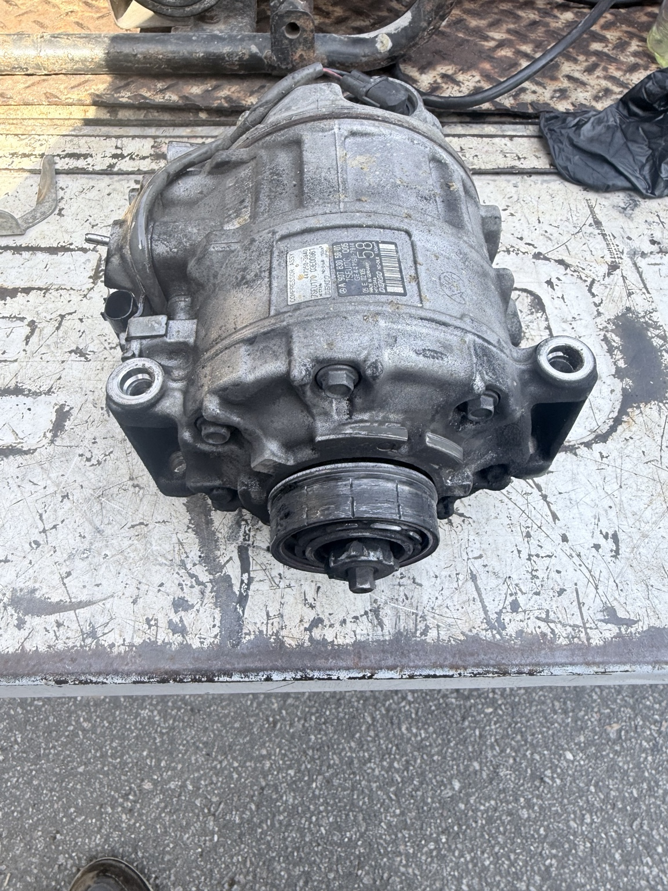
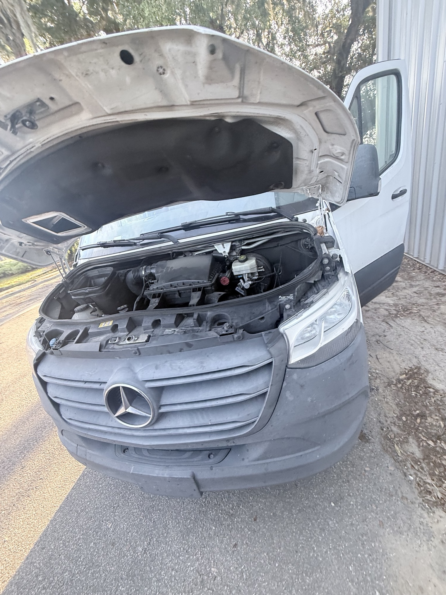
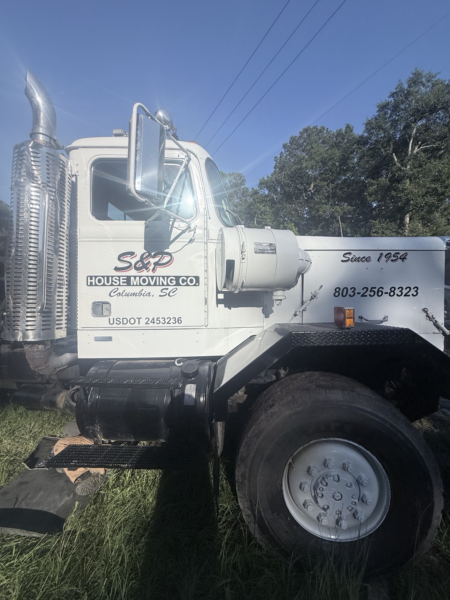
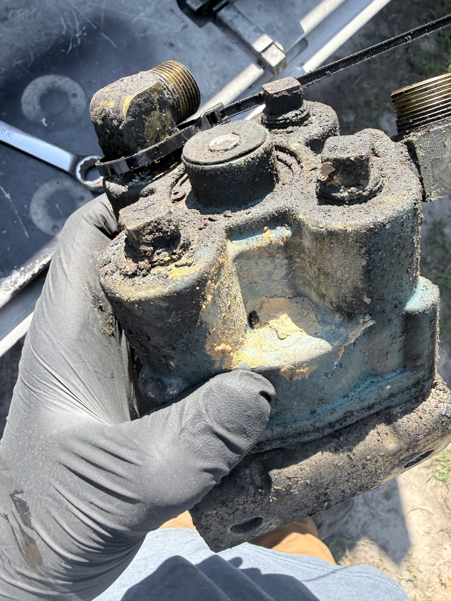
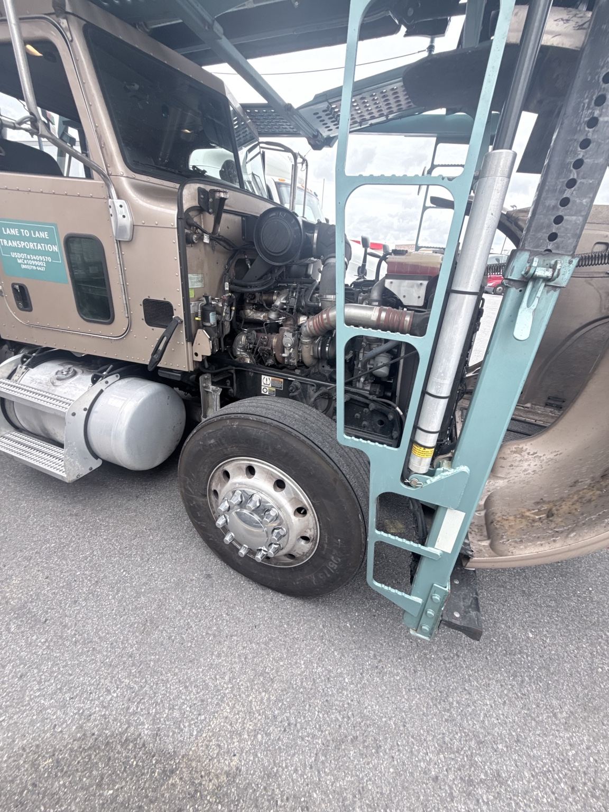
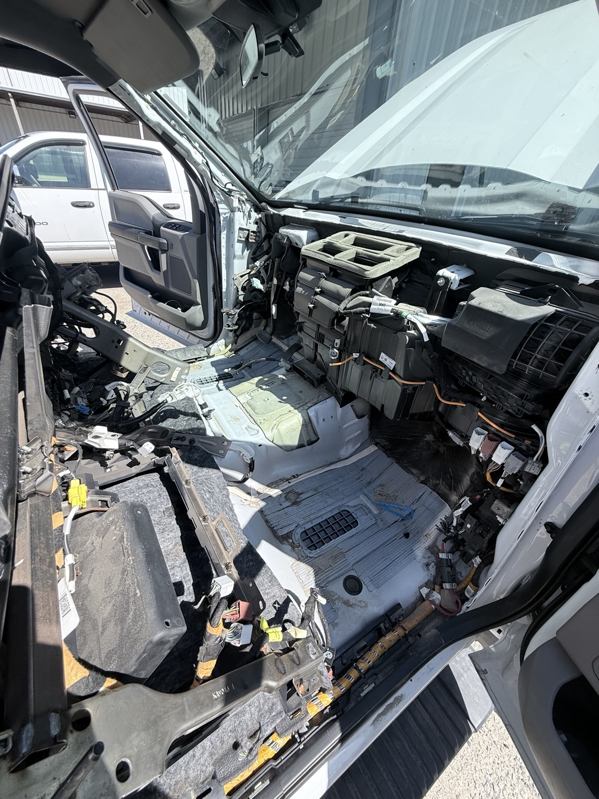
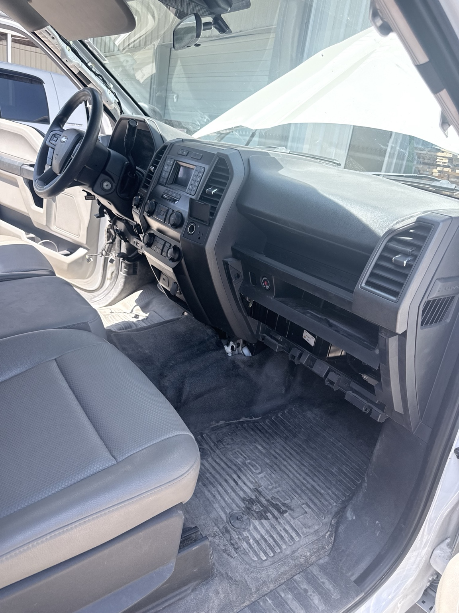
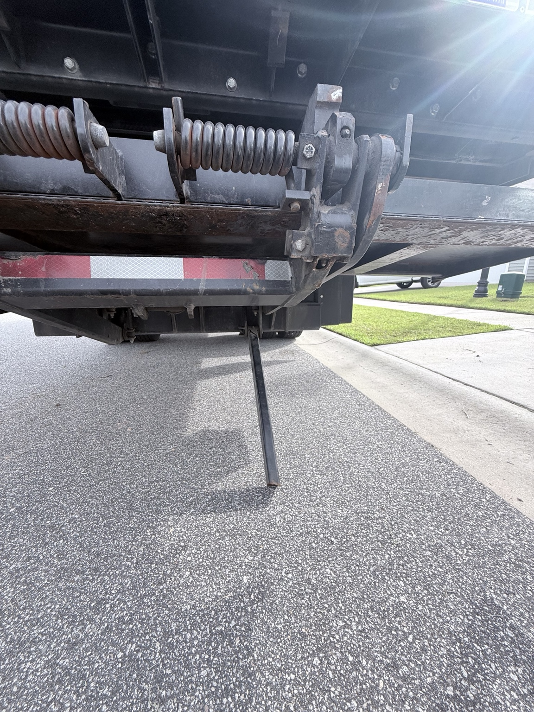
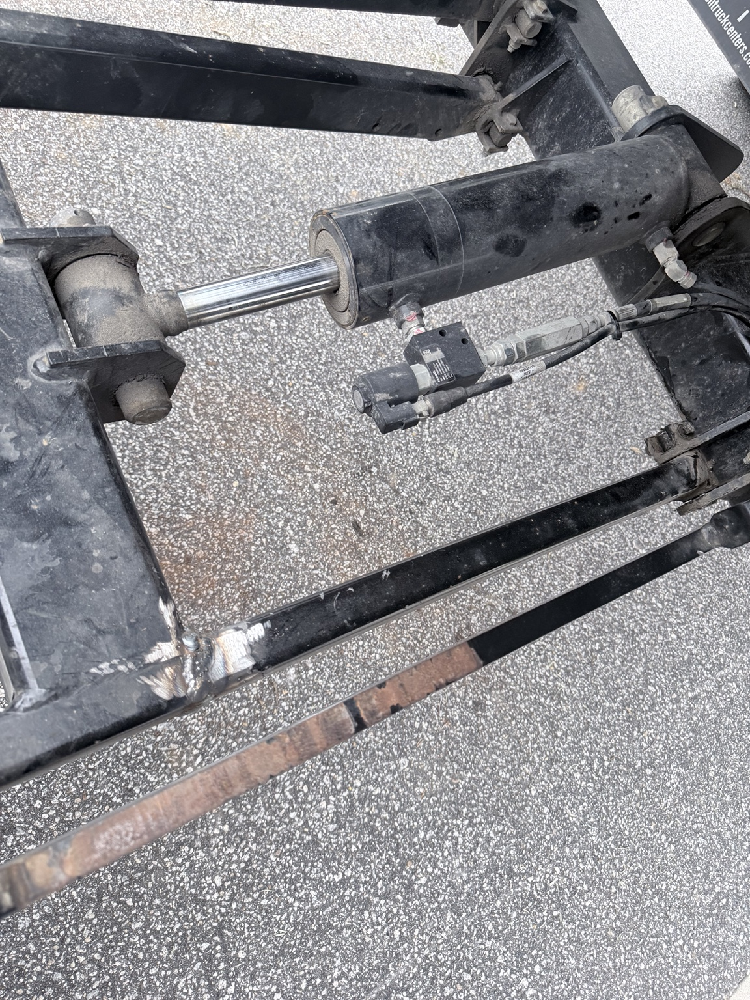

Lift gate hydraulics diagnostics and repairs
A/C hose and line repair for mobile equipment and truck climate-control systems.
Lowcountry Diagnostics helps commercial fleets and truck owners reduce downtime with accurate troubleshooting, on-site preventive maintenance, clear repair direction, and heavy-duty truck service across the Charleston area.
Customer Reviews
See recent customer feedback from Lowcountry Diagnostics. Reviews are pulled from the connected Google review widget below.
How We Work
Lowcountry Diagnostics is built around accurate diagnostics, practical repair support, and communication that keeps you informed. Before parts are replaced, we review the reported issue, verify the failure, explain the findings, and give you a repair direction you can act on. For fleet customers, we also document repeat concerns, follow-up items, and maintenance issues that should be planned before they become emergency repairs.
For fleets, that means fewer surprises, better repair decisions, and a service history that helps identify repeat problems before they become another breakdown. Our goal is simple: reduce downtime, avoid guesswork, and keep trucks and equipment working We also explain what we found, what it means, and the next practical step before unnecessary parts are thrown at the problem.
Who We Are
Lowcountry Diagnostics is built around one thing: figuring out what is actually wrong. Whether it is an aftertreatment fault, an electrical issue, a no-start, or a truck that keeps derating, the goal is to diagnose it correctly and get the unit back to work.
Based in Charleston, SC
Some repairs belong in a shop. A lot of diagnostics do not. We can meet you at the yard, terminal, roadside location, or job site and help determine whether the truck can be repaired on-site or needs a deeper repair plan.
Call Us NowCall or text Lowcountry Diagnostics for mobile heavy-duty truck repair in the Charleston area.
(843) 310-0995
Joseph@lowcountrydiag.com
Recent Repair Photos
Scroll through real field photos from Lowcountry Diagnostics. From A/C repairs and electrical work to hydraulic, liftgate, and heavy-duty truck service, this is a snapshot of the work we handle.










Let us know how we can assist you and expect prompt, accurate responses.